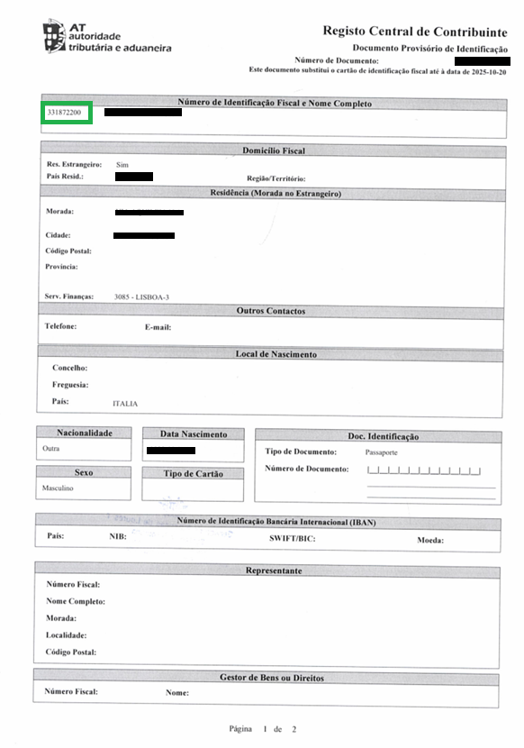
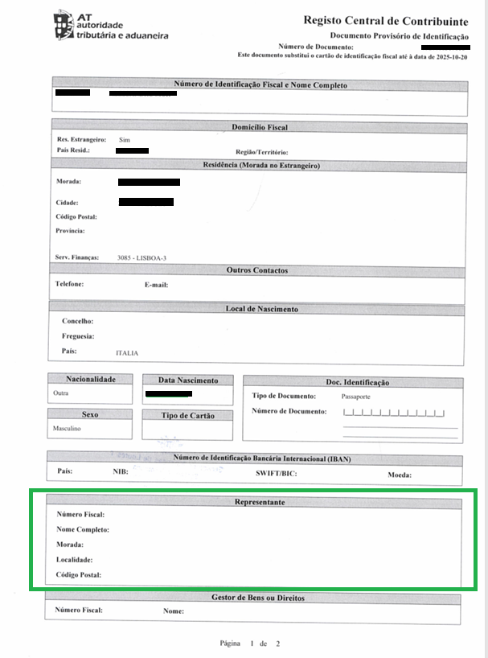

At NIF4Erasmus, we understand that navigating the Erasmus experience can raise many questions, especially when it comes to managing your NIF and understanding the tax system abroad.
In this section, we've gathered answers to the most common questions from students just like you, if you can't find what you're looking for, feel free to reach out to us for further assistance!
The NIF (Número de Identificação Fiscal) is your taxpayer identification number in Portugal. It’s essential for many everyday tasks, like signing a rental contract, opening a bank account, getting a mobile phone plan, or signing up for health insurance. You may also hear it called the "Número de Contribuinte".
Yes, you can request your NIF from anywhere in the world.
Usually, the process of obtaining your NIF takes between 3 to 5 business days. This duration is subject to variation based on certain factors, primarily hinging on the operational efficiency of the Portuguese Tax Office.
We support all nationalities for our NIF service.
You just need 2 documents to request your NIF:
Additional requirements apply for minors.
If you are applying for a NIF for a minor under the age of 18, you need to submit the following additional requirements:
A proof of address is a document used to verify a person's residential address for their NIF application. You can submit one of the following documents, provided it meets the conditions below:
Name and surname on your proof of address: Your first name and surname on your Proof of Address must match your passport/National ID card exactly.
Language of the document: If the document is not written in the Roman alphabet, you need to provide an English translation.
Minor: If you are requesting a NIF for a minor (child under 18), please include the proof of address of one of the parents.
After NIF4Erasmus receives your NIF, we will automatically request your password from the Portuguese tax office. Your password will be delivered to your address (EU/EEA Citizen) or fiscal representative (Non EU/EEA Citizen) by physical mail and usually takes about 3 - 4 weeks.
If we are your tax representative, once your password has been received, we will send you a copy via email. You will now be able to access the Portuguese tax office website, also known as Portal das Finanças. After you become a tax resident in Portugal, you will be able to update your address to your Portuguese address.
You can find your NIF in the upper left corner of the PDF document provided by Finanças.
No, NIF doesn’t have an expiry date, it is issued to you for life.
Yes! An electronic signature is accepted provided that it matches the signature on your passport/national ID card exactly.
No, you do not need to notarize the Power of Attorney document. You simply need to make sure that your signature on the Power of Attorney document matches the one on your passport exactly.
The NIF is issued by the Portuguese Tax and Customs Authority (Autoridade Tributária e Aduaneira), commonly referred to as Finanças.
The NIF (Número de Identificação Fiscal) is just a number, not a physical card. In Portugal, the physical NIF card no longer exists. Once your NIF is issued, you will receive it in digital format.
Yes, you need a NIF to rent a house in Portugal.
Rental contracts must be officially registered on the Portuguese Tax Authority’s platform (Portal das Finanças), and for that, all parties involved - including the tenant - must have a valid NIF. It’s highly recommended to obtain your NIF before searching for accommodation, as most landlords will ask for it upfront.
Yes. A NIF is mandatory to open a bank account in Portugal. Banks will require it as part of your identification and tax registration process.
Yes, you can. There is no minimum stay required to obtain a NIF. Even if you’re staying in Portugal for just a few months, having a NIF is often necessary for basic tasks like signing a lease or getting a phone plan.
The tax representation is a legal service that allows non-residents in Portugal to have a representative in the country for tax purposes. This representative will handle all tax-related matters, such as filing taxes and communicating with the Portuguese tax authorities on your behalf.
Getting a tax representative in Portugal is a requirement for non-EU/EEA Citizen, in order to obtain a Portuguese NIF.
No, there is no difference between a tax representative and a fiscal representative, both terms refer to the same role in Portugal.
One of the lawyers from NIF4Erasmus will be your tax representative in Portugal, managing all the necessary paperwork and communication with the Portuguese tax authorities on your behalf.
You can find that information at the bottom of the document.
Yes, you can change your fiscal representative. If you wish to switch to a different representative, you will need to inform NIF4Erasmus.
Yes, NIF4Erasmus offers ongoing fiscal representation for non-residents. This service is available annually (100€/year), ensuring that your tax-related matters are always handled efficiently.
To cancel your fiscal representation with NIF4Erasmus, you will need to contact us by message or email. We will guide you through the cancellation process and ensure that all necessary steps are taken to terminate your representation.
Yes, if you are a non-resident in Portugal and fail to have a tax representative when required, you could face penalties or fines. Having a tax representative ensures compliance with Portuguese tax laws.
Yes, we will notify you in advance before your fiscal representation expires, so you can renew the service and continue your tax representation without any interruptions.
If you have a permanent Portuguese address and are considered a resident for tax purposes, you may not need fiscal representation. However, if you are still classified as a non-resident for tax purposes, fiscal representation may still be necessary
The process is straightforward: first, you fill out the form, submit the required documents, and make the payment. After that, we will review the documentation. If there is anything that is not in compliance, we will ask you to provide the necessary corrections. Once everything is in order, we will send you the power of attorney for your signature. After receiving the signed power of attorney, we will submit your application to the Portuguese tax authorities (Finanças). We will guide you every step of the way to ensure a smooth experience.
Once you submit your documents, we’ll review them to ensure everything is in order. After that, we will send the power of attorney for your signature. Once signed, we will submit your application to the Portuguese tax authorities (Finanças). You will receive your NIF directly from us, and we’ll notify you when it’s ready.
Yes, the service is 100% online. You can submit your documents, communicate with us, and receive your NIF all without needing to visit our office.
Yes, if any issues arise with the Finanças, we are here to help. Our team will assist you in resolving the matter and ensuring that your NIF is issued without problems.
Refunds are only available if the cancellation is made before the process begins. Once we’ve submitted your documents to the authorities, no refund will be issued, unless there is an administrative or documentation issue that prevents the issuance of the NIF
The fee includes the full processing of your NIF application, document verification, submission to the tax authorities, request for your password (palavra passe) on the Finanças portal, and our support throughout the entire process. You will receive your NIF upon completion.
The cost of the NIF service is €50, if fiscal representation is required the cost will be €100.
This covers all steps in the application process, including the request for your password (palavra passe) on the Finanças portal, as well as customer support until you receive your NIF.
Yes, absolutely! Although NIF4Erasmus was created with Erasmus students in mind, our service is open to anyone who is interested or needs a Portuguese tax number (NIF). If you´re moving to Portugal and need a NIF, we´re here to help – regardless of your student status.
Yes, we do. Since we are lawyers, we can assist with other legal services you may need. Just get in touch with us and let us know how we can help!
Didn’t find the answer you were looking for? Reach out to us by email or message and we’ll be happy to assist you.